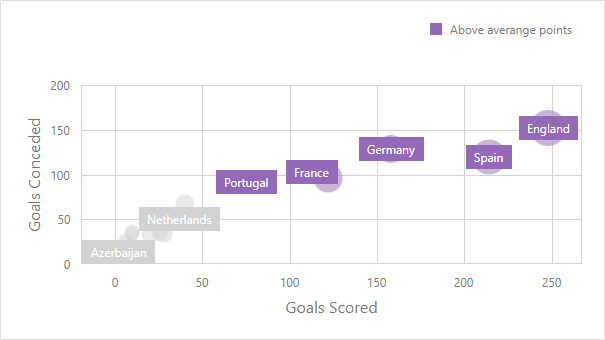
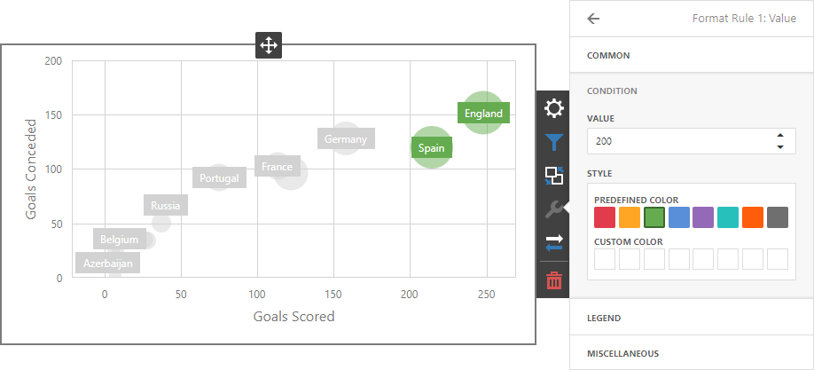
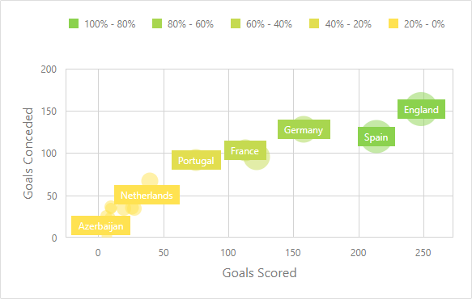
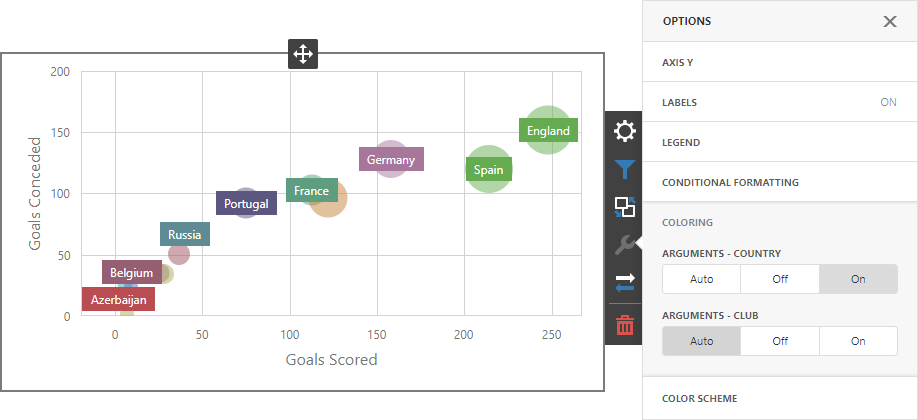

Conditional Formatting
Use conditional formatting to highlight points in a Scatter Chart dashboard item.

Supported Format Rules
You can use the following data in rule calculations:
- measures from the X and Y axis sections
- measures from the Weight section
- dimensions from the Arguments section
- hidden measures
Format conditions that can be applied to different data item types are as follows:
- numeric
- Value
- Top-Bottom
- Average
- Expression
- Color Ranges
- Gradient Ranges
- string
- Value (with the condition type set to Equal To, Not Equal To or Text that Contains)
- Expression
- date-time
- Value
- A Date Occurring (for dimensions with a continuous date-time group interval)
- Expression
- Color Ranges
- Gradient Ranges
Refer to the following topic for more information about format condition types: Conditional Formatting in Web Dashboard.
Create and Edit a Format Rule
You can create and edit format rules in the Conditional Formatting section that is located in the following places:
The dashboard item's Options menu
The data item menu
Refer to the following topic for information on how to create and edit format rules: Conditional Formatting in Web Dashboard.
Format Condition Settings Specific to Scatter Charts
Specify appearance settings and set the condition's value to create a format rule. Available settings depend on the selected format condition type.
The image below displays the Value rule settings. The condition colors bubbles if their weight exceeds 200.

You can apply one of the predefined colors or set a custom color for this condition.
Go to the rule's Legend section and set the Caption field to specify the legend's text. It enables the Display in Legend option and the Scatter Chart item displays information about the applied rule in the legend.
The image below displays the Scatter Chart item with the applied Greater Than format rule. The Display in Legend option is activated and the rule's caption is displayed in the legend:

For Range format rules, the legend display text is generated automatically and depends on the range intervals:

Coloring
A Scatter Chart item paints elements in pale gray if they don't meet the applied format condition. Note that this doesn't apply to elements that are painted by different hues.
Enable coloring for arguments to restore the color scheme:

Tip
Documentation: Web Dashboard - Coloring